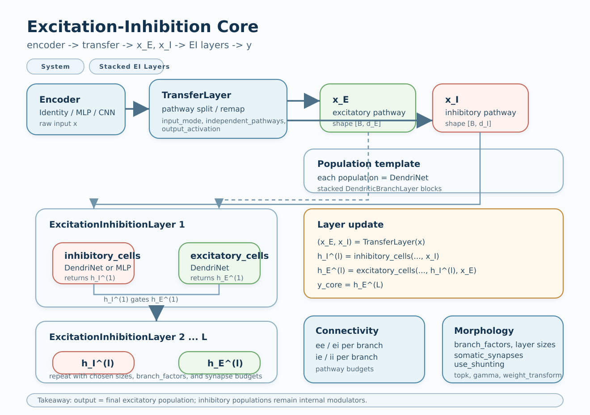
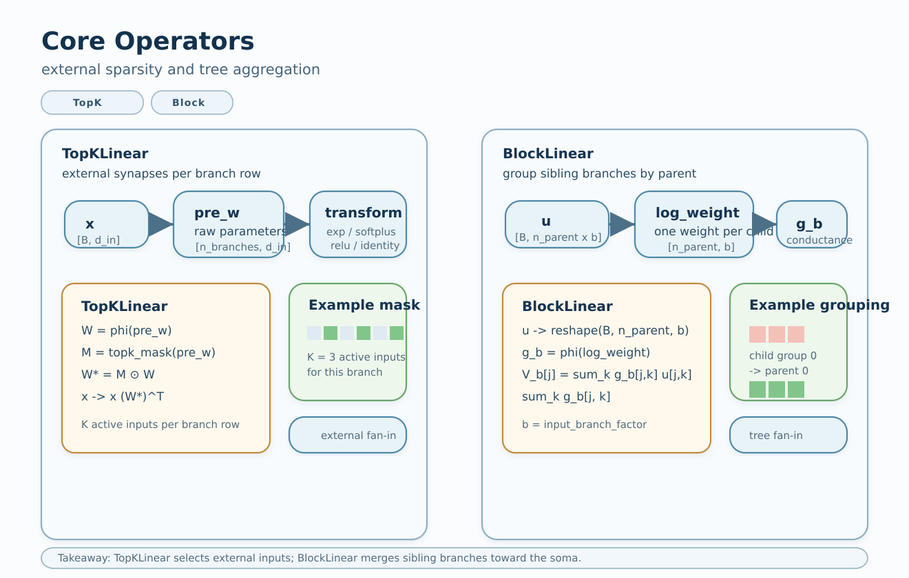

Network Architectures
The framework implements a three-part model: encoder (input processing), core network (computation), and decoder (output mapping). This page documents all core network types and their configuration.
Architecture Pipeline
Every model follows the encoder-core-decoder pattern:
Encoder: processes raw input (Identity, MLP, or CNN)
Core network: main computational unit (documented below)
Decoder: maps to output space (Identity or MLP)
The core network type is set via model.core.type in the YAML config file.
Visual Overview
The diagrams below are meant to answer the first engineering question people
usually have about this codebase: what exactly is a dendritic neuron here, and
how do TopKLinear, branch factors, E/I routing, and somatic synapses fit
together?


Network-level view of the feedforward E/I core. TransferLayer produces
(x_E, x_I). Each ExcitationInhibitionLayer updates the inhibitory
population first and then feeds that output into the excitatory population.
The core network output is always the final excitatory state.

Single-neuron view of one dendritic tree. Every DendriticBranchLayer can
receive direct excitatory and inhibitory synapses, and parent layers also
receive aggregated child-branch input through BlockLinear.
The most important config-to-code mapping is:
excitatory_layer_sizesandinhibitory_layer_sizeschoose how many dendritic trees exist in each populationexcitatory_branch_factorsandinhibitory_branch_factorschoose the branching pattern inside each tree*_synapses_per_branchchooses the row-wiseKused by eachTopKLinearbanksomatic_synapsesdecides whether the soma layer also has direct E/I synapsesuse_shuntingchooses divisive versus additive integration inside eachDendriticBranchLayer
Core Network Types
Type string |
Description |
Aliases |
|---|---|---|
|
E-I network with shunting (divisive) inhibition |
|
|
E-I network with additive (subtractive) inhibition |
|
|
Flattened dendrites with shunting inhibition |
|
|
Flattened dendrites with additive inhibition |
|
|
Generic E-I; reads |
|
|
E-I with signed weights, |
|
|
Unified E-I, supports feedforward and recurrent |
|
|
Gated Recurrent Unit |
|
|
Long Short-Term Memory |
|
|
Standard RNN |
|
|
Multi-layer perceptron baseline |
|
ExcitationInhibitionNetwork
The primary architecture. Each network consists of a TransferLayer followed by one or more ExcitationInhibitionLayer instances. Each layer pairs an excitatory DendriNet population with an inhibitory population (DendriNet or MLP).
Forward pass: input passes through the TransferLayer, producing separate excitatory and inhibitory signals. At each layer, the inhibitory population processes the excitatory input first; its output then modulates the excitatory population via shunting or additive inhibition. The final layer’s excitatory output is the network output.
In code terms, the main forward rule is:
(x_E, x_I) = TransferLayer(x)
h_I^(l) = inhibitory_cells(h_E^(l-1), h_I^(l-1))
h_E^(l) = excitatory_cells(h_E^(l-1), h_I^(l))
This is implemented by ExcitationInhibitionNetwork.forward calling
ExcitationInhibitionLayer.forward layer by layer.
TransferLayer
Controls how input is routed to the E and I pathways.
input_mode0 – both pathways receive the full input. 1 – E gets full input; I gets an independent pathway (if
independent_pathways=True).independent_pathwaysIf
True, input dimensions are split between E and I. IfFalse, input is duplicated to both.excitatory_dim,inhibitory_dimExplicit dimension split. Defaults to
input_dim / 2each.output_activationOptional nonlinearity on the split outputs:
"sigmoid","relu","tanh","softplus", orNone.For shunting E-I models with positive weight transforms, this is also the recommended place to clamp normalized raw inputs back to a nonnegative range, e.g.
output_activation: "relu".
Config path: model.core.transfer.
model:
core:
transfer:
input_mode: 1
independent_pathways: false
output_activation: null
E-I Network Configuration
model:
core:
type: dendritic_shunting
architecture:
excitatory_layer_sizes: [100, 50]
inhibitory_layer_sizes: [20, 10]
excitatory_branch_factors: [3, 3, 3, 3]
inhibitory_branch_factors: [1]
inhibitory_network_type: "dendritic"
connectivity:
ee_synapses_per_branch_per_layer: [40]
ei_synapses_per_branch_per_layer: [0]
ie_synapses_per_branch_per_layer: [10]
ii_synapses_per_branch_per_layer: [0]
morphology:
somatic_synapses: false
use_shunting: true
weight_transform: "softplus"
dbl_init_method: "analytical_expectation"
sparsity:
init_method: "xavier_normal"
type: "standard"
gamma: 1.0
reactivation:
enabled: true
type: "param_tanh"
init_m: 1.5
init_b: 0.5
DendriNet
A single-population dendritic network with hierarchical branching. Used as the building block within each E-I layer.
branch_factors defines the dendritic tree. For example, [3, 2] creates
two levels of branching: 3 branches at the first level, each splitting into 2,
giving 6 distal branches per soma neuron.
The architecture is built from distal to soma:
Level 0 (most distal): receives synaptic input from external sources
Intermediate levels: aggregate child branches via BlockLinear
Soma level: final aggregation, produces the layer output
If somatic_synapses is True, the soma level also receives direct
synaptic input in addition to branch aggregation.
Two implementation details are easy to miss:
each branch layer receives the same external
x_Eand optionalx_I; direct synapses are not restricted to the most distal levelthe tree is vectorized across neurons by flattening all branches at a given depth into one feature axis, so
output_dimat a branch layer isn_soma * branches_at_that_level
Key parameters:
n_somaNumber of output neurons.
branch_factorsList of integers defining the branching tree structure.
excitatory_input_dim,excitatory_synapses_per_branchExcitatory input specification per branch.
inhibitory_input_dim,inhibitory_synapses_per_branchInhibitory input specification per branch.
somatic_synapsesWhether the soma level receives direct synaptic input.
use_shuntingTruefor shunting (divisive) inhibition;Falsefor additive.
DendriticBranchLayer
The core computation unit. Each branch layer contains synaptic input layers, optional branch aggregation, and a post-voltage nonlinearity.
Shunting Mode
When use_shunting=True, the voltage is computed as a normalized ratio:
numerator = E + E_rec + V_branch
denominator = 1 + E + E_rec + g_branch + I + I_rec
V = numerator / (denominator + epsilon)
output = reactivation(V)
Where E is the excitatory synaptic current (TopKLinear), I is
inhibitory, V_branch is aggregated child-branch input (BlockLinear),
g_branch is the branch conductance, and E_rec, I_rec are recurrent
inputs (used only in recurrent mode). The current implementation uses these raw
terms directly in the denominator. Epsilon defaults to 1e-8.
Additive Mode
When use_shunting=False:
V = E + E_rec + V_branch - I - I_rec
output = reactivation(V)
Optional additive normalization: V = (V - mean) / (std + epsilon).
Components
branch_excitationTopKLinear – excitatory synaptic input.
branch_inhibitionTopKLinear – inhibitory synaptic input (optional).
branch_recurrentTopKLinear – recurrent excitatory input (recurrent mode only).
branch_rec_inhibitionTopKLinear – recurrent inhibitory input (recurrent mode only).
branches_to_outputBlockLinear or EfficientBlockLinear – aggregates child branches.
reactivationParametric nonlinearity applied to the voltage output.
Operator-Level View


TopKLinear and BlockLinear control different kinds of structure.
TopKLinear enforces sparse external synapses per branch. BlockLinear
enforces tree-structured aggregation from sibling branches to their parent.
For engineering work, the key distinction is:
Kcontrols how many external inputs each branch keepsbranch_factorcontrols how many child branches are grouped by the next parent branchthese are independent controls and they act at different points in the forward pass
TopKLinear
Sparse synaptic layer. For each output neuron, only the K largest-weight
connections are active; all others are masked to zero.
KNumber of active synapses per output neuron.
weight_transformTransformation applied to raw parameters before masking.
"exp"(default) – always positive."softplus"– always positive, smoother gradient."relu"– non-negative, can be exactly zero."identity"– signed weights (used bydendritic_mlp).init_methodWeight initialization:
"xavier_normal","xavier_uniform","kaiming_normal","kaiming_uniform","orthogonal","normal","uniform","eye".noise_levelGaussian noise added during top-K selection (default: 0.0).
weight_norm_orderOptional L-p normalization per output neuron.
gammaPost-normalization scaling factor (default: 1.0).
Config path: model.core.sparsity.
TopK Variants
Set via model.core.sparsity.type:
standardDeterministic top-K mask (default).
stochasticSoft top-K with temperature for differentiable selection. Config:
sparsity.temperature.varianceVariance-aware synapse selection.
deepstDynamic rewiring with density targets. Additional parameters under
sparsity.deepst:excitatory_target_density,inhibitory_target_density,sigma,rewiring_mode("global"/"local"),rewire_frequency.
BlockLinear
Block-diagonal linear layer for aggregating child-branch activations. Each
output neuron receives exactly block_size inputs from consecutive positions,
where block_size = in_features / out_features.
EfficientBlockLinear is a memory-efficient variant that uses reshape
operations instead of a sparse matrix. Same API and behavior.
Config path: model.core.blocklinear.
Activation Functions
Post-voltage nonlinearities applied at each branch layer. Set via
model.core.reactivation.type.
param_tanh(default)(tanh(m * (V - b)) + 1) / 2with learnable slopemand midpointb. Output range is [0, 1]. Initialized withinit_mandinit_b.param_tanh_only_mSame as
param_tanhbutbis fixed (not trainable).param_linear_sigmoid,param_linear_tanh,param_linear_tanh_transitionBlended activations combining a linear region with a saturating function.
relu,sigmoid,tanh,leaky_relu,elu,selu,softplusStandard PyTorch activations (no learnable parameters).
model:
core:
reactivation:
enabled: true
type: "param_tanh"
init_m: 1.5
init_b: 0.5
Reactivation Gate Initialization
The reactivation gate (tanh(m * (V - b)) + 1) / 2 has two learnable
parameters: the slope m and the midpoint b. How these are initialized
determines the gate’s operating point at the start of training.
Reactivation policies can initialize the gate either from analytical branch
statistics or from sampled branch-voltage statistics. The data-driven
policies place the gate using the observed voltage distribution V, which
keeps the same interface usable across shunting and additive morphologies.
init_policy selects the initialization strategy:
quantile(backprop starting point; validate with init diagnostics)Post-init calibration using quantile-occupancy. After the model is built, a few training batches are run through it. For each reactivation layer, the 10th and 90th percentiles of the pre-reactivation voltage
Vare measured, and(m, b)are set to pin those quantiles to the [0.1, 0.9] gate-output interval:b = (q10 + q90) / 2m = atanh(0.8) / ((q90 - q10) / 2)
This is morphology-invariant by construction: it places the gate’s active region around the observed voltage distribution regardless of whether the network uses shunting (V bounded in [0, 1]) or additive (V unbounded) morphology. All data-driven modes use iterative calibration (
n_iterations=3) because updating upstream layers reshapes downstream voltage distributions.The outer tails are allowed to saturate on purpose.
quantileis not trying to use the entire gate range uniformly; it is trying to place the bulk of the observed voltage mass into the gate’s sensitive region while keeping the tails as margin.Quantile-based calibration now includes safeguards for ill-conditioned upper-layer fits. If the observed quantile span is too small or the fitted slope would have to exceed the configured
calibration_max_m, the layer falls back to its pre-calibration gate state instead of forcing a saturated occupancy fit.The fitted
(m, b)are layer-specific by design. Different dendritic depths see different voltage statistics, so forcing one shared gate slope across depth is usually a worse calibration. For depth analysis, compare normalized gate coordinates or occupancy statistics rather than raw voltages across layers.Pair with a small
reactivation_lr(1e-4or1e-5) to keep gate slope drift under control. For data-driven init policies, check the automatically writteninit_gate_stats.jsonartifact in the run directory before treating a run as healthy.occupancy_quantile(recommended for local learning)Generalized quantile-occupancy calibration with configurable quantile and target pairs. For local learning, use
q_low=0.05, q_high=0.95mapping to gate outputsr_low=0.2, r_high=0.8. This gives the gate a wider active region thanquantile, which gives the gate room to self-organize under noisier local credit signals. This is the recommended local-learning default for both shunting and additive.empiricalRobust median/MAD calibration from sampled voltages.
analytical(default)Analytical initialization derived from the weight-init statistics by the chosen
dbl_init_method. No data is required. Usesinit_mandinit_bas starting values.fixedUses the YAML-supplied
init_mandinit_bverbatim, ignoring all calibration.
Strategy-Specific Recommendations
Recommended default choices are:
Regime |
Default |
Settings |
|---|---|---|
Backprop |
|
|
Local CA |
|
|
No morphology-specific defaults are needed.
Init diagnostics
When a model contains learnable reactivation gates, the training script writes
init_gate_stats.json into the run directory immediately after model build.
This summarizes the initial m and b distributions per reactivation
module and flags suspicious patterns such as:
slopes near the calibration clip
repeated identical values across a full layer combined with saturation
gate centers pushed to the voltage-range edge
This diagnostic is especially useful when using quantile or
occupancy_quantile policies on new datasets or new recurrent settings.
Standard backprop (both morphologies):
model:
core:
reactivation:
init_policy: "quantile"
training:
main:
common:
param_groups:
reactivation_lr: 0.0001
Local learning (both morphologies):
model:
core:
reactivation:
init_policy: "occupancy_quantile"
occupancy_quantile_low: 0.05
occupancy_quantile_high: 0.95
occupancy_target_low: 0.2
occupancy_target_high: 0.8
training:
main:
common:
param_groups:
reactivation_lr: 0.001
Gate-occupancy warmup in a multi_stage pipeline is available when a staged
training setup is desired, but it is separate from the default local-learning
configuration shown above.
Recommended defaults
quantilefor backprop, with a smallreactivation_lroccupancy_quantilefor local CA, using q05/q95 -> 0.2/0.8
These defaults apply across both shunting and additive settings.
Training-Time Gate Maintenance
Initialization and training-time gate updates are separate controls.
For the paper-facing backprop settings, the recommended default is:
use
init_policy: "quantile"once at the start of trainingkeep
reactivation_update_mode: "backprop"leave
recalibrate_reactivation_every: 0
This uses quantile only to place the gate initially. After that, (m, b)
continue to learn through the optimizer like the rest of the model.
For local learning, the recommended default is:
use
init_policy: "occupancy_quantile"keep Local CA updates enabled for
(m, b)do not enable periodic quantile refresh unless the experiment is explicitly about comparing local gate updates against quantile-maintained gates
Optional periodic quantile maintenance is available for controlled ablations
and diagnostics. The relevant trainer fields live under
training.<strategy>.common:
reactivation_update_mode"backprop"keeps optimizer or local-rule learning of(m, b)."quantile"freezes those direct updates and refreshes(m, b)from the observed voltage distribution during training.recalibrate_reactivation_everyRefresh period in epochs.
0disables training-time refresh.reactivation_recalibration_modeCalibration rule used for periodic refresh.
"from_init_policy"reuses the configured initialization rule;"occupancy_quantile"is the most common explicit choice for quantile-maintained gates.reactivation_recalibration_start_epochFirst epoch at which periodic refresh is allowed. Setting this to
2or later preserves the chosen initialization through the first training epoch.reactivation_recalibration_num_batchesNumber of training batches used to estimate the live voltage distribution for each refresh.
reactivation_recalibration_ema_alphaBlend factor for periodic refresh.
1.0means hard overwrite with the newly calibrated(m, b). Values in(0, 1)apply an EMA-style update toward the calibrated target.
In short: quantile initialization is the default paper recipe for backprop, while periodic quantile maintenance is a supported experimental option for studying simplified gate learning.
Recurrent E-I Network
Any E-I architecture (dendritic_shunting, dendritic_additive,
einet) becomes recurrent when connectivity.rec_* synapse counts are
nonzero. Recurrence is controlled solely by these synapse counts;
any layer with at least one nonzero rec_* value becomes recurrent.
The existing architecture, connectivity, morphology,
sparsity, reactivation, and blocklinear sections are reused;
a small recurrent_ei block provides only the temporal parameters.
The factory translates this to an EINetwork internally.
Alternatively, use core.type: ei_unified with the unified_ei config
for full per-layer, per-population control.
Making an E-I core recurrent
model:
core:
type: dendritic_shunting # same type as feedforward
architecture:
excitatory_layer_sizes: [64]
excitatory_branch_factors: [3, 3]
connectivity:
ee_synapses_per_branch_per_layer: [12]
ie_synapses_per_branch_per_layer: [6]
# Nonzero rec counts trigger recurrent mode
rec_ee_synapses_per_branch: [8] # E->E recurrent
rec_ie_synapses_per_branch: [4] # I->E recurrent
rec_ei_synapses_per_branch: [8] # E->I recurrent
rec_ii_synapses_per_branch: [4] # I->I recurrent
transfer:
input_mode: 1
inhibitory_mode: "first" # none, first, all
# morphology, sparsity, reactivation, blocklinear as usual...
recurrent_ei: # temporal params only
output_mode: last # "last", "all", "mean"
use_transfer: true # default true (set false to bypass TransferLayer)
dt: 1.0 # timestep (scalar or per-layer list)
tau_base: 50.0 # base time constant (scalar or per-layer list)
tau_ratio: 3.0 # geometric ratio between levels (scalar or per-layer list)
training:
main:
strategy: recurrent
For recurrent einet-style configs, use_transfer defaults to true
for legacy parity, so a TransferLayer is built for both input_mode=1 and
input_mode=0.
Set recurrent_ei.use_transfer: false to disable it explicitly.
Recurrent connectivity parameters
These go in the connectivity: section alongside the feedforward synapse
counts, as per-layer lists (repeat-last semantics):
rec_ee_synapses_per_branchE->E recurrent synapses per branch (applied to E population).
rec_ie_synapses_per_branchI->E recurrent synapses per branch (applied to E population).
rec_ei_synapses_per_branchE->I recurrent synapses per branch (applied to I population, defaults to
rec_ee).rec_ii_synapses_per_branchI->I recurrent synapses per branch (applied to I population, defaults to
rec_ie).
A layer is recurrent if any of its rec synapse counts are > 0.
Temporal parameters (recurrent_ei)
output_mode"last","mean","all"(default:"last").use_transferWhether to build a TransferLayer before recurrent E-I layers. Default:
truefor recurrenteinetpath (setfalseto bypass).dtIntegration timestep. Scalar or per-layer list (default: 1.0).
tau_base,tau_ratioBase time constant and geometric ratio between dendritic levels. Scalar or per-layer list. Distal levels get longer time constants:
tau[i] = tau_base * tau_ratio^(n_levels - 1 - i).level_tausExplicit per-level time constants. If set, overrides
tau_base/tau_ratio.
Other parameters
transfer.inhibitory_modeControls which layers receive the transfer layer’s inhibitory stream when
input_mode=1."none"- no layer receives it."first"(default) - only the first layer."all"- every layer. This is strictly enforced: layers not selected receiveNoneas inhibitory input.architecture.input_projection_dimsOptional MLP dims before the E-I layers.
implementation.store_routingRecord per-level routing info for analysis.
Using ei_unified directly
For full per-layer, per-population control, use core.type: ei_unified
with the unified_ei config. Each layer is an EILayerConfig containing
excitatory and inhibitory PopulationConfig objects.
The recurrent unified-EI path reuses the same DendriticBranchLayer and
initialize.py logic as the feedforward EI stack. The main difference is
that recurrent populations wrap those branch layers with per-level temporal
traces and optional recurrent synapse banks.
PopulationConfig fields
- Synapse counts:
ff_excitatory_synapses,ff_inhibitory_synapses(feedforward),rec_excitatory_synapses,rec_inhibitory_synapses(recurrent, 0 for FF).- Dendritic structure:
n_neurons,branch_factors.- TopK sparsity:
topk_init_method,topk_noise_level,topk_type("standard","stochastic","variance","deepst"),topk_weight_norm_order,topk_gamma,topk_temperature,topk_ultrafast,topk_strategy("none","conductance_dynamic").- Dendritic computation:
weight_transform("exp","relu","softplus","identity"),use_shunting,use_additive_normalization,allow_self_recurrence,somatic_synapses,dbl_init_method,efficient_blocklinear,blocklinear_strategy.- Reactivation:
reactivate,reactivation_type("param_tanh","tanh","sigmoid"),reactivation_init_m,reactivation_init_b,reactivation_strategy.- Temporal:
tau_base,tau_ratio,level_taus,epsilon.- Recurrent structure:
allow_self_recurrencecontrols whether same-population recurrent synapses may read from the previous-timestep soma/output state of the same neuron. When set toFalse, self-feedback is masked for E->E and I->I recurrent synapses while cross-population recurrence remains unchanged. This flag is only meaningful when the corresponding recurrent synapse count is nonzero.- Implementation:
print_hooks,adaptive_initialization.
EILayerConfig fields
excitatoryPopulationConfig for the excitatory population.
inhibitoryPopulationConfig for the inhibitory population (
nullto omit).recurrentTrueto enable recurrent dynamics;Falsefor feedforward.dtIntegration timestep (default: 1.0).
direct_ff_inhibitory_to_excitatoryIf
True, excitatory population receives external inhibitory input directly (e.g., from transfer layer) even without a local inhibitory population.
EINetworkConfig fields
layersList of EILayerConfig instances.
use_transferUse TransferLayer for input routing (default:
False).transfer_paramsTransferLayer parameters (
input_mode,independent_pathways, etc.).input_projection_dimsOptional MLP dims before the E-I stack.
output_mode"last"– final timestep[B, C]."mean"– temporal average[B, C]."all"– all timesteps[B, T, C].store_routingRecord routing info for analysis.
Recurrent dynamics: at each timestep, raw synaptic currents are computed
per dendritic level, then integrated with leaky dynamics:
trace' = decay * trace + (1 - decay) * raw, where
decay = exp(-dt / tau). The shunting (or additive) computation is applied
to the integrated traces. Five trace types are maintained per level:
feedforward E, feedforward I, recurrent E, recurrent I, and branch aggregation.
model:
core:
type: ei_unified
unified_ei:
output_mode: last
use_transfer: false
layers:
- recurrent: true
dt: 1.0
excitatory:
n_neurons: 64
branch_factors: [3, 3]
ff_excitatory_synapses: 12
ff_inhibitory_synapses: 6
rec_excitatory_synapses: 8
rec_inhibitory_synapses: 4
allow_self_recurrence: false
tau_base: 50.0
tau_ratio: 3.0
inhibitory:
n_neurons: 16
branch_factors: [3, 3]
ff_excitatory_synapses: 8
ff_inhibitory_synapses: 4
rec_excitatory_synapses: 4
rec_inhibitory_synapses: 2
allow_self_recurrence: false
Baseline RNN Cores
Standard recurrent architectures for comparison: gru, lstm,
vanilla_rnn.
model:
core:
type: gru
baseline_rnn:
hidden_dim: 128
num_layers: 1
dropout: 0.0
output_mode: last
input_projection_dims: []
MLP Baseline
Standard multi-layer perceptron. Variants include PointMatchedParamMLP,
MatchedTotalParamMLP, MatchedActiveParamMLP, and
SparseStructuredMLP for controlled parameter-count comparisons.
model:
core:
type: mlp
parameters:
hidden_dims: [128, 64, 32]
activation: relu
Configuration Reference
ArchitectureConfig
Parameter |
Type |
Default |
Description |
|---|---|---|---|
|
list[int] |
|
Neurons per excitatory layer |
|
list[int] |
|
Neurons per inhibitory layer |
|
list[int] |
|
Branching factors for excitatory dendrites |
|
list[int] |
|
Branching factors for inhibitory dendrites |
|
str |
|
|
|
list[int] |
|
MLP dims before first E-I layer (empty = none) |
ConnectivityConfig
Parameter |
Type |
Default |
Description |
|---|---|---|---|
|
list[int] |
|
Excitatory-to-excitatory synapses per branch |
|
list[int] |
|
Excitatory-to-inhibitory synapses per branch |
|
list[int] |
|
Inhibitory-to-excitatory synapses per branch |
|
list[int] |
|
Inhibitory-to-inhibitory synapses per branch |
|
list[int] |
|
E->E recurrent synapses per branch (nonzero = recurrent) |
|
list[int] |
|
I->E recurrent synapses per branch |
|
list[int] |
|
E->I recurrent synapses (defaults to |
|
list[int] |
|
I->I recurrent synapses (defaults to |
MorphologyConfig
Parameter |
Type |
Default |
Description |
|---|---|---|---|
|
bool |
|
Direct synaptic input at soma level |
|
bool |
|
Shunting (divisive) vs additive inhibition |
|
bool |
|
Normalize voltage in additive mode |
|
str |
|
Weight transform: exp, softplus, relu, identity |
|
str |
|
BlockLinear initialization method |
SparsityConfig
Parameter |
Type |
Default |
Description |
|---|---|---|---|
|
str |
|
TopK weight initialization |
|
float |
|
Noise during top-K selection |
|
str |
|
standard, stochastic, variance, deepst |
|
int/None |
|
L-p normalization order |
|
float |
|
Post-normalization scale |
|
float |
|
Stochastic TopK temperature |
ReactivationConfig
Parameter |
Type |
Default |
Description |
|---|---|---|---|
|
bool |
|
Apply reactivation nonlinearity |
|
str |
|
Activation type |
|
float |
|
Initial slope parameter |
|
float |
|
Initial midpoint parameter |
TransferFunctionConfig
Parameter |
Type |
Default |
Description |
|---|---|---|---|
|
int |
|
0: both get full input; 1: split |
|
bool |
|
Split input dims between E and I |
|
int/None |
|
Explicit E pathway dimension |
|
int/None |
|
Explicit I pathway dimension |
|
str/None |
|
Post-split activation |
|
str |
|
Recurrent I routing: |
ImplementationConfig
Parameter |
Type |
Default |
Description |
|---|---|---|---|
|
bool |
|
Network-aware weight scaling |
|
bool |
|
Print gradient statistics |
|
bool |
|
Store per-timestep routing info for analysis |
|
bool |
|
Opt-in/out |